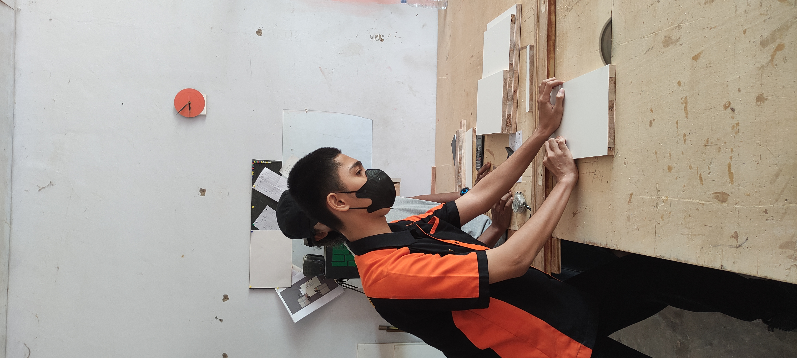

Aku ada perencanaan sebuah proyek, yaitu membuat website yang bernama Mabel of Furniture.
Mengapa aku mengambil ide ini? Karena aku memiliki pengalaman semasa bersekolah di SMK. Saat itu sebenarnya aku ingin masuk jurusan TKJ, tetapi karena kuotanya sudah penuh, akhirnya aku masuk ke jurusan KKKR (Kriya Kreatif Kayu dan Rotan).
Dari pengalaman tersebut, aku menjadi lebih mengenal dunia furnitur dan kerajinan kayu. Oleh karena itu, aku memiliki ide untuk membuat sebuah website yang dapat digunakan sebagai media promosi dan informasi mengenai produk furnitur.